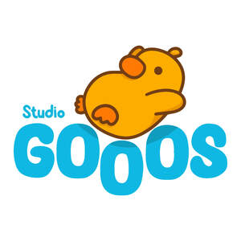

Trade Mark Journal No.2025/022 30 May 2025
UK00004203310 14 May 2025 (14,16,25,28,35)

- Class 14
- Cloisonne pins; Lapel pins [jewellery]; Pins [jewellery]; Pins being jewellery; Lapel pins [jewelry]; Pins being jewelry; Pins [jewelry]; Lapel pins; Ornamental pins; Pins (Ornamental -); Decorative pins [jewellery]; Ornamental lapel pins; Jewellery hat pins; Jewelry hat pins; Lapel pins of precious metals [jewellery]; Ornamental hat pins; Decorative pins of precious metal; Jewelry pins for use on hats; Ornamental pins made of precious metal; Pins [jewellery, jewelry (Am.)]; Gold plated brooches [jewellery]; Lapel badges of precious metal; Decorative brooches [jewellery]; Enamelled jewellery; Key fobs [rings] coated with precious metal; Brooches [jewelry]; Jewelry brooches; Brooches being jewelry.
- Class 16
- Paper cartons for delivering goods; Semi-processed paper; Paper stationery; Giftwrapping paper; Paper bags; Gift-wrapping paper; Paper and cardboard; Packaging bags of paper; Printed packaging materials of paper; Paper sheets [stationery]; Handkerchiefs of paper; Bags and articles for packaging, wrapping and storage of paper, cardboard or plastics; Paper boxes; Business card paper [semi-finished]; Packaging boxes of paper; Paper gift bags; Gift paper; Paper labels; Paper shopping bags; Art paper; Envelope paper.
- Class 25
- Gloves for apparel; Jerseys [clothing]; Clothing; Ready-to-wear clothing; Parts of clothing, footwear and headgear; Men's clothing; Embroidered clothing; Jackets [clothing]; Headbands for clothing; Leisure clothing; Casual clothing; Clothing for leisure wear; Denims [clothing]; Shorts [clothing]; Aprons [clothing]; Wristbands [clothing]; Footwear; Gloves [clothing]; Gloves as clothing; Plush clothing; Shoes for leisurewear; Women's clothing; Footwear for women; Footwear for men; Ready-made clothing; Jackets (Stuff -) [clothing]; Stuff jackets [clothing]; Casual footwear.
- Class 28
- Plush toys; Plush dolls; Stuffed and plush toys; Stuffed plush toys; Plush stuffed toys; Soft sculpture plush toys; Smart plush toys; Plush toys with attached comfort blanket; Cuddly toys; Stuffed bean-filled toys; Soft toys; Fluffy toys; Stuffed toy bears; Soft sculpture toys; Stuffed toys; Stuffed toy animals; Stuffed dolls; Soft toys in the form of animals; Stuffed animals [toys]; Stuffed puppets; Bendable toys; Fabric toys; Modeled plastic toy figurines; Toy figurines; Plastic toys for use in the bath.
- Class 35
- Retail services connected with the sale of clothing and clothing accessories; Retail services in relation to clothing accessories; Mail order retail services for clothing accessories; Retail store services in the field of clothing.
Jacob Kennedy
Samantha Landells